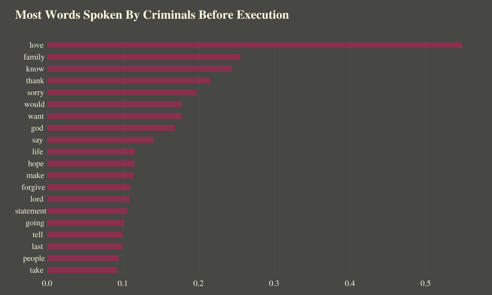

Goodbye World! Last Statement Analysis for Criminals
BY Sirui Zhu
Published on 17th August
This is a text analysis based on Texas Department of Criminal Justice. I wandered at this website, and want to check to see the text inside.
What do last statement mostly about?
Not surprised, love, family and those words are the most used words in 553 criminals since 1982. They are more like regretful and care for forgiveness. While few of them rejected to give a last statement.
NOTE: This is measured by term frequency, the most used words
in their last statement.
SOURCE: Texas Department of Criminal Justice
How about Religious word? Is there a trend over the years?
I’ve notice that god and lord appeared sometime, how about religious words been used over the years?
I set up a list with: 'god', 'jesus', 'muslim', 'christ', 'holy', 'allah', ‘lord’. The graphic below gives us an idea of in which period, criminals were used most religious word. Maybe there were a trend with American religious trend or history?

NOTE: The rate is measured by religious words in all the words used by criminals that year
For more accurate, here dropped the numbers of criminals been executed less than 10 in the years.
SOURCE: Texas Department of Criminal Justice
Another angle with religious words been used with races
Exactly the same list of religious words, how about they were used for different race of people?
Hispanic used most religious words in their last statement, followed by white criminals.

NOTE: The rate is measured by religious words in all the words used by criminals that year, based on race.
SOURCE: Texas Department of Criminal Justice